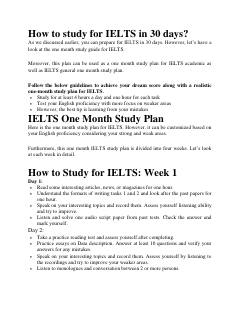

HTIELTS imtihoniga 30 kun ichida tayyorgarlik ko'rish uchun to'liq haftalik reja.
Ushbu qo'llanma IELTS imtihoniga 30 kun ichida samarali tayyorgarlik ko'rish uchun mo'ljallangan to'rt haftalik rejamizni taqdim etadi. Kitobda tinglash, o'qish, yozish va gapirish ko'nikmalarini bosqichma-bosqich rivojlantirish bo'yicha amaliy maslahatlar berilgan.